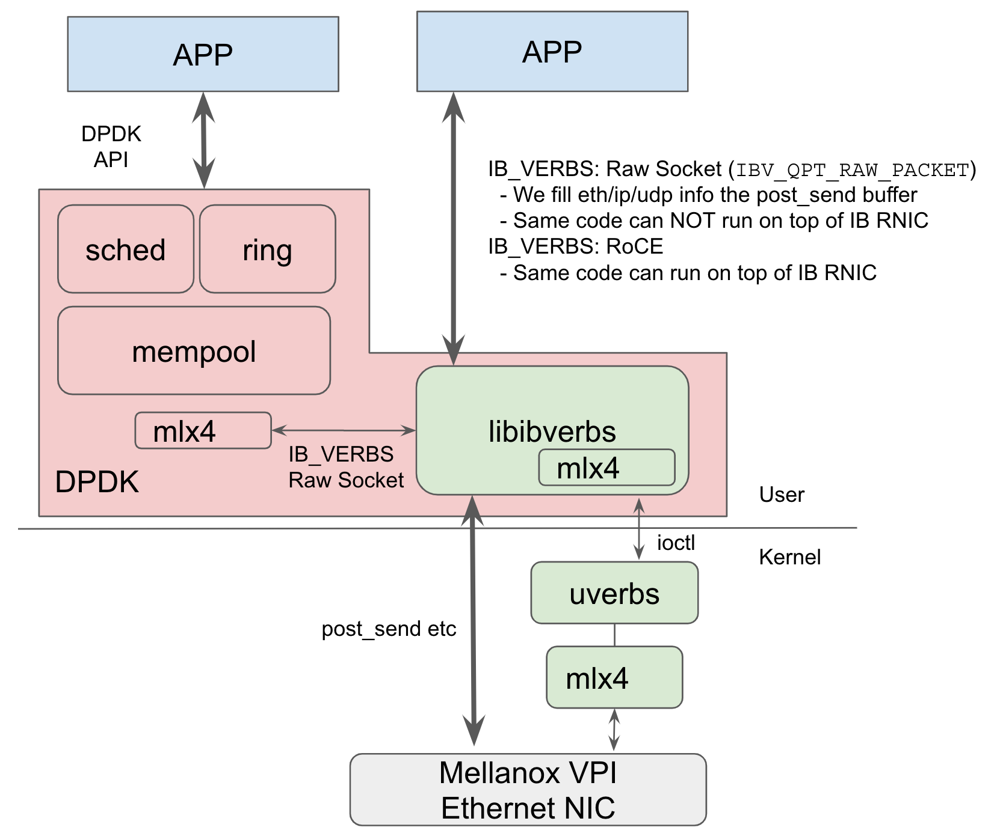

Source code study¶
Version History
| Date | Description |
|---|---|
| Feb 4, 2020 | add io_uring, firecracker |
| Jan 31, 2020 | Add some good stuff |
| Jan 18, 2020 | Initial |

Beautiful code is art. Recently I started forking good open source code into my own Github account and started casual reading and taking notes.
One of the major motivation is to take notes, honestly. For some low-level projects (e.g., GRUB2, rdma-core), I’ve already managed to understand them before, but I reget I didn’t take any notes or anything.
In general, GNU projects are very hard to read, they have their own coding style which isn’t for everyone. My personal favorite is linux kernel coding style, and many linux-related projects follow this, e.g., CRIU, rdma-core.
Either way, happy hacking!
Misc
- glibc: libc, elf, and dynamic linker
- Some juicy information about GOT/PLT
- and explains what has happend before main() is called
- binutils: gas, static linker, and more
- assembler is amazing
- static linker.. the magic thing is its linker script!
- CRIU: Checkpoint and Restore in Userspace
- GRUB2: bootloader
- Learn how modern bootloader works.
- Detailed analysis of Linux booting sequence (how it transit from real-mode to protected mode, and finally to 64-bit mode, how to navigate Linux source code etc.)
- io_uring
Firmware
- SeaBIOS: the default BIOS used by QEMU
- qboot: an alternative and lightweight BIOS for QEMU
- Those are massive hackers, respect.
- My experience about BIOS is calling them while the kernel (LegoOS) is running at 16-bit. BIOS is the OS for a just-booted kernel. I remember the lower 1MB is never cleared, maybe we could invoke the BIOS at 32 or 64-bit mode?
- A book:
Beyond BIOS Developing with the Unified Extensible Firmware Interface.
Virtualization
Network
- rdma-core
- Userspace IB verbs library (e.g., libibverbs)
- Commands such as
ibv_devinfo,rc_pingpong - Learn how userspace IB layer communicate with kernel, but also bypass kernel.
The technique replies on
ioctl()andmmap(), standard. But the ABI interface (i.e., data structures) are quite complex. - This is beautiful code
- Kernel Infiniband stack
- DPDK
- DPDK uses VFIO to directly access physical device. Just like how we directly assign device to guest OS in QEMU.
- Even though both DPDK and RDMA bypass kernel, their control
path is very different. For DPDK, there is a complete device
driver in the user space, and this driver communicate with the device via MMIO.
After VFIO ioctls, all data and control path bypass kernel.
For rdma-core, a lot control-path IB verbs (e.g., create_pd, create_cq) communicate with kernel via Infiniband device file ioctl.
And you can see all those uverb hanlders in
drivers/infiniband/core/uverbs.cThose control verbs will mmap some pages between user and kernel, so all following datapath IB verbs (e.g., post_send) will just bypass kernel and talk to device MMIO directly. Although rdma-core also has some vendor-specific “drivers”, but this is really different from the above DPDK’s userspace PCIe driver, per se. Userspace “rdma-core” vendor-driver deals with the kernel devel vendor-level driver details. - FWIW, if you are using a Mellanox VPI card in Ethernet mode (e.g. CX3-5), DPDK will use its built-in mlx driver, which further use libibverbs, which further relies on kernel IB stack. It’s not a complete user solution somehow. Note that DPDK built-in mlx driver uses RAW_PACKET QPs.
- 
- Verilog-Ethernet
- Self-made PHY, MAC IPs
- ARP, IP, UDP stack
- Alex Forencich is a phenomenon Verilog hacker
- Corundum: an FPGA-based NIC
Operating Systems:
FPGA Related:
- Collection
- Readings
- Partial Reconfiguration Building Framework
- Intepret Xilinx Bitstream
- HLS-based ICAP Controller
Web Servers
KV Stores
Point of interests: 1) in-memory, and can it extend to use disk/ssd? 2) persistence support 3) network support